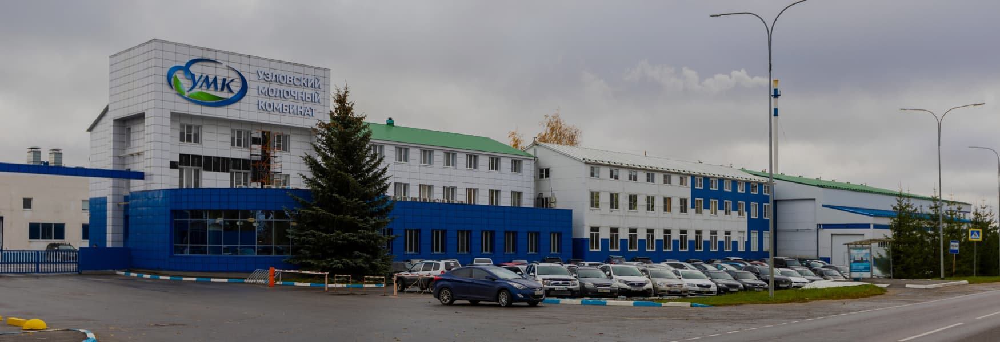

О компании УМК
Узловский молочный комбинат — эксперт в разработке молочных продуктов и ингредиентов для HoReCa и пищевых производств. Мы соединяем научные инновации, современные производственные технологии и партнерский подход, чтобы развивать творческие идеи и дело клиентов — с помощью качественных, вкусных и безопасных продуктов.

Принципы УМК
Создаем индивидуальных свойств и состава продукта под ваш запрос
Оптимизируем себестоимость за счет выверенной рецептуры, наилучшего подбора сырья, и новейших технологий, минимизирующих потери.
Обеспечиваем ритмичные поставки и стабильное качество продуктов
Помогаем вам заботиться об удовольствии и здоровье клиентов

История развития компании
HoReCa
Делаем продукты удобными в работе и полезными для здоровья гостей. Помогаем шеф-поварам воплощать свои замыслы, а рестораторам — оптимизировать себестоимость меню.
Подробнее о решениях

Производства
Предлагаем готовые решения для разных типов производств и дорабатываем их под оборудование клиента. Выстраиваем простое и быстрое взаимодействие по поставкам.
Подробнее о решениях

Исследовательский центр
Собственный центр исследований и разработок — инновационная база нашей компании. Проводя фундаментальные и прикладные исследования, мы создаем новые технологии, открываем неизвестные свойства молока, управляем вкусом и создаем точные рецептуры по запросам клиентов.
Благотворительные проекты

Название проекта
Разработка ингредиентов для пищевых производств – наша сильная сторона бизнеса. Текст с информацией о компании, производстве, опыте и преимуществах. Текст с информацией о компании, производстве, опыте и преимуществах.
Название проекта
Разработка ингредиентов для пищевых производств – наша сильная сторона бизнеса. Текст с информацией о компании, производстве, опыте и преимуществах. Текст с информацией о компании, производстве, опыте и преимуществах.

Название проекта
Разработка ингредиентов для пищевых производств – наша сильная сторона бизнеса. Текст с информацией о компании, производстве, опыте и преимуществах. Текст с информацией о компании, производстве, опыте и преимуществах.
Команда
Станьте частью нашей команды
Мы растем, и нам нужны люди, разделяющие нашу увлеченность и наши ценности.
Новые корпоративные принципы
Вместо иерархии — уважение, ответственность, понимание важности своей работы и раскрытие своего потенциала
Экологичное управление
Уникальная авторская методика разрешения конфликтов внутри коллектива
Профессиональное и личностное развитие
Возможности роста через систему наставничества и решение нестандартных задач
Посмотреть вакансии
Обратная связь

Остались вопросы?